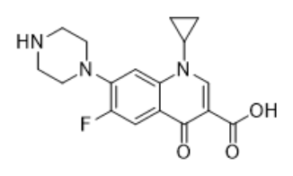
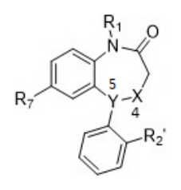
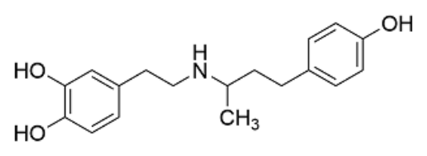

下列關於藥物的吸收或代謝之敘述，何者正確？
- （A）酸性藥物較鹼性藥物不易在胃部吸收
- （B）酸性藥物中毒時可以使用NH4Cl
- （C）鹼性藥物的酸解離常數（acid dissociation constant）小於酸性藥物
- （D）脂溶性藥物較水溶性藥物易由乳汁分泌
答案：（D）
這一頁是民國 112 年第 1 次藥師藥理學與藥物化學的整份歷屆試題，共 80 題，題目與標準答案出自考選部「國家考試試題及測驗式試題答案」開放資料，其中 64 題附有詳解。以下逐題列出題幹、選項與答案；要計時作答或記錄成績，請用線上練習。
考選部原始場次代碼：112020
線上作答這一科 →答案：（D）
答案：（A）
正解：partial agonist 會和 full agonist 競爭同一受體，雖能產生作用但內在活性較低；因此它的作用可受 antagonist 拮抗，故選 A。
B：partial agonist 的分類依內在活性而非是否結合 allosteric site；多數討論的是與 full agonist 競爭受體的主要結合位置。
C：partial agonist 具有介於 antagonist 與 full agonist 之間的 intrinsic activity，不是完全沒有內在活性。
D：增加濃度只能逐漸接近 partial agonist 自己較低的最大效應，不能把最大效應提高到 full agonist 的程度。
本題考點：部分致效劑（partial agonist）——受體占有率再高仍達不到 full agonist 的最大效應時，判為 partial agonist；內在活性（intrinsic activity）——antagonist 的內在活性為零，partial agonist 則大於零但小於 full agonist；競爭性拮抗（competitive antagonism）——兩藥競爭相同受體時，antagonist 可抑制 agonist 的效應。
答案：（D）
正解：判準是受體位於細胞膜上經 G protein 傳遞訊號，或位於細胞內直接調控轉錄。testosterone 作用於細胞內的 steroid hormone receptor，不是 GPCR，故選 D。
A：dopamine receptors 為 GPCR，依受體亞型與不同 G protein 耦合來調節第二訊使。
B：enkephalin 作用於 opioid receptors，這類受體屬 GPCR。
C：histamine receptors 以 G protein 介導訊號傳遞，屬 GPCR 家族。
本題考點：G-蛋白耦合受體（G-protein-coupled receptors，GPCRs）——看到膜受體經 G protein 與第二訊使傳訊時，歸入 GPCR；類固醇受體（steroid hormone receptor）——脂溶性荷爾蒙進入細胞後結合細胞內受體並調節基因轉錄，不按 GPCR 判斷。
答案：（B）
正解：本題的關鍵線索是 HIV 感染者併肺結核，須避開抗結核藥與抗反轉錄病毒藥的強烈代謝交互作用。rifampin 是強效 CYP3A inducer，會大幅降低 atazanavir 暴露，兩者不應同時使用，因此（B）錯誤，故選 B。
A：以 rifabutin、isoniazid、pyrazinamide、ethambutol 作為初始抗結核組合，可避開 rifampin 與部分抗反轉錄病毒藥的強烈交互作用。
C：rifabutin 與 dolutegravir 可併用；是否需要依整體抗反轉錄病毒療法調整，仍須依實際併用藥物評估。
D：酗酒本已增加肝臟負擔，isoniazid 與 pyrazinamide 皆有肝毒性風險，併用時須更留意肝功能。
本題考點：rifampin 藥物交互作用（rifampin drug interaction）——遇到 rifampin 時先檢查 CYP3A induction 是否使併用藥暴露顯著下降；HIV 與結核病共感染（HIV and tuberculosis coinfection）——選擇抗結核方案時同時比對抗反轉錄病毒藥的代謝路徑；抗結核藥肝毒性（antitubercular hepatotoxicity）——isoniazid、pyrazinamide 與酒精暴露並存時，應提高肝損傷警覺。
答案：（A）
正解：linezolid 與其他抗生素較少交互抗藥性的關鍵，是它結合 50S 核糖體上的 23S rRNA 特定位點，抑制蛋白質轉譯起始；作用位置具獨特性，故選 A。
B：特異性阻斷細菌蛋白質生成是許多抗生素共有的概念，無法說明為何 linezolid 特別少與其他類別交互抗藥。
C：不受 cytochrome P450 影響是在人體內代謝或藥物交互作用的議題，和細菌對不同抗生素的交互抗藥機轉無直接關係。
D：抑制粒線體蛋白質生成可解釋部分宿主毒性，並非 linezolid 缺少交互抗藥性的原因。
本題考點：oxazolidinone 類抗生素（oxazolidinones）——辨認 linezolid 時記住其結合 50S 的 23S rRNA 並阻斷轉譯起始；交互抗藥性（cross-resistance）——同一或重疊靶點容易共用抗藥機轉，作用位點獨特時較不易交互抗藥；核糖體抑制劑（ribosomal inhibitors）——先分辨藥物影響 30S、50S 或轉譯起始，才能區隔同類誘答。
答案：（B）
正解：非小細胞肺癌的常用藥可涵蓋鉑類、紫杉類及 EGFR inhibitor；cytarabine 主要用於血液惡性腫瘤，不適用於治療非小細胞肺癌，故選 B。
A：carboplatin 為鉑類藥物，可用於非小細胞肺癌的化學治療組合。
C：docetaxel 為紫杉類藥物，可用於非小細胞肺癌。
D：erlotinib 為 EGFR tyrosine kinase inhibitor，可用於具有相應分子特徵的非小細胞肺癌。
本題考點：非小細胞肺癌藥物（non-small cell lung cancer therapy）——先按細胞毒性藥物與分子標靶藥物分類，再辨認是否為肺癌常用選項；cytarabine（cytarabine）——看到此 antimetabolite 時優先聯想到白血病等血液惡性腫瘤，而非實體肺癌；EGFR inhibitor——遇到 erlotinib 時，以具相應腫瘤分子特徵的非小細胞肺癌為判斷方向。
答案：（C）
正解：本題以各型白血病的典型化學治療對應為判準。慢性淋巴性白血病可採含 cyclophosphamide、vincristine、prednisone 的組合治療，因此（C）正確，故選 C。
A：imatinib 主要抑制 BCR-ABL tyrosine kinase，是慢性骨髓性白血病的代表性治療，不是急性骨髓性白血病的主要用藥。
B：6-mercaptopurine 常用於急性淋巴性白血病的治療階段，不能取代慢性骨髓性白血病以 BCR-ABL 為標的的治療。
D：rituximab 針對 CD20 陽性 B 細胞疾病；急性淋巴性白血病的主要治療不能概括為單用 rituximab。
本題考點：白血病分類與治療（leukemia treatment）——先把 AML、CML、CLL、ALL 分成骨髓性或淋巴性、急性或慢性，再配對典型藥物；BCR-ABL inhibition——imatinib 對應 CML 的 BCR-ABL，而不是所有骨髓性白血病；抗 CD20 治療（anti-CD20 therapy）——rituximab 的適用要看 B 細胞表面標記，不能把它泛化成 ALL 的主要治療。
答案：（D）
正解：amphotericin B 的重要限制是腎毒性，會造成腎小管損傷並降低腎功能，因此（D）正確，故選 D。
A：amphotericin B 對多數敏感真菌具 fungicidal 作用，主要用於嚴重或全身性黴菌感染，不是治療皮膚指甲黴菌感染的首選抑菌藥。
B：amphotericin B 是直接結合 ergosterol 後形成膜孔洞，不是抑制 ergosterol 生合成；抑制生成是 azole 類等藥物的辨識點。
C：amphotericin B 與 flucytosine 的經典併用情境是隱球菌感染等嚴重全身性感染，不能據此推成產色黴菌病的標準組合。
本題考點：amphotericin B 作用機轉（amphotericin B mechanism）——看到 polyene 類時，以結合 ergosterol、形成膜孔洞判斷，不和抑制 ergosterol 合成混淆；amphotericin B 腎毒性（amphotericin B nephrotoxicity）——治療期間看到腎功能下降或腎小管損傷，先考慮此藥的不良反應；抗黴菌藥分類（antifungal drug classes）——polyene 類破壞細胞膜，azole 類抑制 ergosterol 合成，依作用位置區分。
答案：（D）
正解：關鍵在「抑制 tubulin polymerization」會使微管無法組裝；（D）vinorelbine 屬 vinca alkaloid，與游離 tubulin 結合並阻斷微管聚合，使有絲分裂停在 M 期，故選 D。
A：topotecan 是 topoisomerase I 抑制劑，藉由穩定 DNA 斷裂複合體阻礙 DNA 複製，作用標的不是 tubulin。
B：paclitaxel 同樣影響微管，卻是促進並穩定已形成的微管、抑制去聚合；它看似同屬微管藥物，但方向與抑制 polymerization 相反。
C：cladribine 是 purine nucleoside analog，干擾 DNA 合成，並不直接干預微管。
本題考點：微管抑制劑（microtubule inhibitors）——看到「阻斷聚合」選 vinca alkaloids，看到「穩定微管、阻斷去聚合」選 taxanes；有絲分裂抑制（M-phase arrest）——微管動態失衡時，先連結到紡錘體形成受阻再判定藥物類別。
答案：（A）
正解：rivaroxaban 的名稱與「口服 anticoagulant」提示直接作用於凝血共同途徑的 factor Xa；（A）factor Xa 被抑制後，prothrombin 轉為 thrombin 的步驟下降，血栓形成因而受阻，故選 A。
B：factor VIIa 參與外因性凝血路徑的起始，並非 rivaroxaban 的主要標的。
C：factor IV 指鈣離子，是凝血反應所需輔因子，不是 rivaroxaban 所抑制的蛋白酶。
D：factor IIa 即 thrombin，直接抑制它的是 dabigatran 或 argatroban 類藥物；分辨關鍵在 rivaroxaban 阻斷的是 thrombin 生成的上游 factor Xa。
本題考點：直接口服抗凝劑（direct oral anticoagulants）——遇到 rivaroxaban 時先鎖定 factor Xa，而不是把所有抗凝藥都歸到 thrombin 抑制；凝血共同途徑（common coagulation pathway）——判別 factor Xa 與 factor IIa 時，看前者是否影響 thrombin 的生成、後者是否直接抑制 thrombin。
答案：（C）
正解：本題要求找出 fibrates 的錯誤敘述；（C）肝功能或腎功能缺損者並非一般適用對象，因 fibrates 可能增加肝臟不良反應，腎功能不佳也會提高藥物累積與肌肉毒性的風險，故選 C。
A：fibrates 可加強 anticoagulant，尤其 warfarin 的抗凝效果，併用時須留意出血風險，故此敘述正確。
B：fenofibrate 可與 statin 併用以處理混合型血脂異常，但仍須監測肌肉相關不良反應；它看似因同屬降血脂藥而不宜合用，實際上可依風險評估併用。
D：fibrates 可增加膽汁中膽固醇排出，因而提高 gallstones 形成的可能性，此敘述正確。
本題考點：fibrates 不良反應（fibrate adverse effects）——看到肝腎功能不全時，先評估累積、肝毒性與肌肉毒性風險，不把「可降脂」直接推成適用；fibrate-statin 併用——可否併用要分藥物與風險監測，不以同類降脂效果作為唯一判準。
答案：（A）
正解：治療 chronic immune thrombocytopenia 的 eltrombopag 是口服小分子血小板生成刺激藥；（A）thrombopoietin receptor（c-Mpl）被活化後會促進巨核細胞增生與分化，提升血小板生成，故選 A。
B：erythropoietin receptor 主要調節紅血球生成，並非 eltrombopag 的標的。
C：granulocyte colony-stimulating factor（G-CSF）receptor 主要促進嗜中性白血球相關生成，和血小板生成的受體不同。
D：interleukin（IL）-11 雖可影響巨核細胞成熟，仍不是 eltrombopag 所直接活化的受體；分辨關鍵在本藥模擬的是 thrombopoietin 訊號。
本題考點：血小板生成素受體致效劑（thrombopoietin receptor agonists）——題幹同時出現 eltrombopag 與血小板低下時，直接連結 c-Mpl 訊號；造血生長因子受體——判斷受體時依產生的血球系統區分：erythropoietin 對紅血球、G-CSF 對嗜中性白血球、thrombopoietin 對血小板。
答案：（A）
正解：前列腺癌治療若要立刻阻斷 gonadotropin-releasing hormone（GnRH）受體，可用受體拮抗劑避免初期 testosterone flare；（A）abarelix 即為 GnRH receptor antagonist，故選 A。
B：abacavir 是 nucleoside reverse transcriptase inhibitor，用於 HIV 治療，沒有 GnRH 受體拮抗作用。
C：abaloparatide 是 parathyroid hormone-related peptide analog，藉 PTH1 receptor 作用於骨代謝，並非前列腺癌的 GnRH 拮抗劑。
D：abatacept 為調節 T-cell costimulation 的融合蛋白，用於自體免疫疾病，作用位置與性腺軸不同。
本題考點：GnRH 受體拮抗劑（GnRH receptor antagonists）——看到前列腺癌且要避免初期 androgen flare 時，選直接阻斷 GnRH 受體的藥物；藥名字首辨識——名稱相近時要回到藥物類別與作用標的，不以字首相同推論適應症。
答案：（B）
正解：兒童長期接受全身性 corticosteroids 時，生長抑制與下視丘、腦下垂體及腎上腺軸的抑制會隨 glucocorticoid 效價與作用時間增加；（B）dexamethasone 效價高且作用長，題目所列製劑中最容易造成明顯生長抑制，故選 B。
A：cortisol 的 glucocorticoid 效價與作用時間相對較低，不是本題所列最容易造成生長抑制的製劑。
C：fludrocortisone 以 mineralocorticoid 活性為主，臨床辨識重點是鈉水滯留與低血鉀，不是最強的生長抑制。
D：triamcinolone 也具有 glucocorticoid 作用，但其強度與持續時間較 dexamethasone 小，兩者差別在長效高效價的全身暴露。
本題考點：糖皮質素效價（glucocorticoid potency）——比較長期不良反應時，同時看抗發炎效價與作用時間，不只看是否為 corticosteroid；生長抑制（growth suppression）——兒童需長期使用全身性 glucocorticoids 時，優先避開長效且高效價的方案。
答案：（A）
正解：metformin 的降血糖核心是降低肝臟葡萄糖輸出與改善胰島素敏感性，而非刺激胰島 β 細胞；（A）促進 insulin 釋放是 sulfonylureas 類的典型機轉，不是 metformin，故選 A。
B：metformin 可抑制肝臟糖質新生作用（gluconeogenesis），因此降低空腹血糖，此敘述正確。
C：metformin 與細胞內 AMP-activated protein kinase 活化相關，這也可解釋其抑制肝臟葡萄糖生成的效果，故非錯誤敘述。
D：腸胃道不適是 metformin 最常見的不良反應；它看似只是一般口服藥副作用，但正是起始治療時常需處理的限制因素。
本題考點：metformin 作用機轉（metformin mechanism）——看到「降低肝臟糖質新生」或 AMPK 時，連結 metformin；胰島素分泌促進劑（insulin secretagogues）——先分清藥物是否直接刺激 β 細胞，才能區隔 metformin 與 sulfonylureas。
答案：（B）
正解：處理 β-blocker 中毒造成的心搏過緩與低血壓時，需要繞過被阻斷的 β-adrenoceptor；（B）glucagon 經自身受體提高心肌 cAMP，可拮抗 β-blocker 的心臟症狀，故選 B。
A：glucagon 確有正性變力作用，但訊號來自 glucagon receptor，不是 β-adrenoceptor。
C：glucagon 不是改善鬱血性心衰竭的常規治療；短暫增加 cAMP 的作用不能等同於慢性心衰竭治療策略。
D：glucagon 在一般劑量下可促進 insulin 分泌，並非抑制其釋放。
本題考點：glucagon 受體訊號（glucagon receptor signaling）——β-adrenoceptor 被封鎖時，判斷能否提高 cAMP 要看藥物是否走獨立受體；β-blocker 毒性（β-blocker toxicity）——遇到心搏過緩與低血壓的解毒題，將 glucagon 與其非 β 受體機轉連結。
答案：（D）
正解：保鉀利尿劑的共同結果是減少集合管的鉀排泄；（D）ethacrynic acid 是作用於亨利氏環粗上行支的 loop diuretic，增加鈉與鉀排出，不是保鉀利尿劑，故選 D。
A：spironolactone 拮抗 aldosterone receptor，減少鈉再吸收與鉀排泄，屬保鉀利尿劑。
B：amiloride 阻斷集合管上皮鈉離子通道（ENaC），降低腔內負電位造成的鉀分泌，屬保鉀利尿劑。
C：triamterene 與 amiloride 同樣以 ENaC 阻斷減少鉀流失，亦屬保鉀利尿劑。
本題考點：保鉀利尿劑（potassium-sparing diuretics）——看到 aldosterone receptor 或 ENaC 被抑制時，預期鉀排泄下降；loop diuretics——看到亨利氏環粗上行支的鈉再吸收受阻時，預期利尿強且鉀流失增加。
答案：（D）
正解：腎自泌素是腎臟內局部產生、局部調節血流或鈉水處理的活性物質；（D）renin 是由腎臟釋出的蛋白酶，負責啟動全身性的 renin-angiotensin-aldosterone system，不屬此處所稱的 renal autacoid，故選 D。
A：adenosine 可在腎臟局部調節入球小動脈張力與腎絲球回饋，屬 renal autacoid。
B：PGE2 是腎臟局部產生的 eicosanoid，可影響腎血流與鈉水排泄，也是利尿劑反應的重要調節物。
C：urodilatin 是腎臟內形成的 natriuretic peptide，可促進排鈉，符合局部調節腎功能的特徵。
本題考點：腎自泌素（renal autacoids）——判斷時看是否以局部訊號直接調節腎血流或腎小管運輸；腎素、血管張力素與醛固酮系統（renin-angiotensin-aldosterone system）——renin 的角色是啟動內分泌級聯，不因來源在腎臟就歸為 autacoid。
答案：（C）
正解：手術期間抑制心律不整需要可快速滴定、停藥後也能迅速消退的 β-blocker；（C）esmolol 為超短效、以 β1 為主的阻斷劑，可在圍手術期調整心率，故選 C。
A：nebivolol 是用於長期降血壓的 β1 選擇性阻斷劑，並非手術中常用的超短效藥物。
B：propranolol 為非選擇性 β-blocker，作用時間較長，不能提供 esmolol 那種迅速可逆的控制。
D：atenolol 雖以 β1 為主，仍屬較長效的口服降血壓藥，與手術期間即時調控的需求不符。
本題考點：超短效 β-blocker（ultrashort-acting β-blocker）——題幹有手術期、快速調整心率時，優先選 esmolol；圍手術期心率控制（perioperative rate control）——判斷重點是起效與消退能否快速可預測，而非只看 β1 選擇性。
答案：（C）
正解：abciximab 的抗血小板作用是阻斷血小板聚集的最終共同步驟；（C）glycoprotein IIb/IIIa receptor 被阻斷後，fibrinogen 無法橋接相鄰血小板，因此可降低血栓形成，故選 C。
A：ADP P2Y12 receptor blocker 會抑制 ADP 介導的血小板活化，代表藥物如 clopidogrel，作用位置不是 abciximab 的 glycoprotein IIb/IIIa。
B：factor Xa 被抑制會降低 thrombin 生成，屬凝血級聯的抗凝策略，不是 abciximab 直接結合的血小板受體。
D：thrombin inhibitor 直接抑制凝血酶活性；它看似同樣預防血栓，分辨關鍵在 abciximab 阻斷的是血小板聚集而非 thrombin。
本題考點：glycoprotein IIb/IIIa 拮抗劑（glycoprotein IIb/IIIa antagonists）——看到 abciximab 時，鎖定 fibrinogen 橋接與血小板聚集終末步驟；抗血小板與抗凝血——同樣降低血栓時，先分作用在血小板受體還是凝血因子。
答案：（A）
正解：判別 angiotensin II receptor（AT1 receptor）inhibitors 時，要看是否為阻斷 angiotensin II 與 AT1 receptor 結合的後果；（A）抑制 bradykinin 代謝是 angiotensin-converting enzyme inhibitors 的特徵，不是 AT1 receptor blockers 的降血壓機制，故選 A。
B：阻斷 AT1 receptor 會降低 aldosterone 相關的鈉水滯留，因此可減少循環容積與 preload，此敘述屬其降血壓效果。
C：angiotensin II 的 AT1 訊號可促進交感神經活化，阻斷該訊號可減少此效應。
D：AT1 receptor blockade 會抑制 angiotensin II 造成的血管收縮，因而降低周邊阻力。
本題考點：血管張力素受體阻斷劑（angiotensin receptor blockers, ARBs）——看到 AT1 receptor 時，連結血管收縮、aldosterone 與交感活化下降；bradykinin 代謝——只有阻斷 angiotensin-converting enzyme 才會直接減少 bradykinin 分解，不能套到 ARBs。
答案：（C）
答案：（A）
正解：Evolocumab 降低 LDL-cholesterol 的關鍵是保留肝細胞表面的 LDL receptor；（A）它是對抗 PCSK9 的單株抗體，阻止 PCSK9 促使 LDL receptor 降解，因此增加 LDL 清除，故選 A。
B：對 apo B-100 synthesis 的 antisense oligonucleotide 代表另一類降低 LDL 的策略，並非 evolocumab 的作用形式。
C：AMP kinase activator 與肝臟葡萄糖代謝和 metformin 較相關，不是 evolocumab 的靶點。
D：CETP 抑制會改變脂蛋白間膽固醇轉運；它看似也和血脂治療有關，但與 PCSK9-LDL receptor 軸不同。
本題考點：PCSK9 抑制（PCSK9 inhibition）——看到 evolocumab 時，先連結「減少 LDL receptor 降解」而不是直接抑制膽固醇合成；LDL receptor 回收——判斷生物製劑降 LDL 的機轉時，看它是增加受體數目還是改變脂蛋白合成或轉運。
答案：（A）
正解：治療重症肌無力需要提高神經肌肉聯會處的 acetylcholine，且題幹另指定直接活化 nicotinic receptor；（A）neostigmine 除抑制 acetylcholinesterase 外，還可直接作用於神經肌肉終板的 nicotinic receptor，故選 A。
B：edrophonium 為短效 acetylcholinesterase inhibitor，並無 neostigmine 所具的直接神經肌肉終板作用，不能符合題幹兩項條件。
C：echothiophate 是不可逆 acetylcholinesterase inhibitor，作用過久且毒性風險高，主要不作為重症肌無力的治療藥。
D：physostigmine 可進入中樞神經系統，常用辨識重點是處理 antimuscarinic 毒性，不具題幹所述的直接 nicotinic receptor 活化。
本題考點：乙醯膽鹼酯酶抑制劑（acetylcholinesterase inhibitors）——重症肌無力題先找能增加神經肌肉接點 acetylcholine 的藥物；neostigmine 的直接終板作用——選項再加上「直接活化 nicotinic receptor」時，從可逆抑制劑中辨出 neostigmine。
答案：（A）
正解：此題比較的是多巴胺 D2 receptor 的相對親和力，而不只是是否能阻斷 D2；（A）thiothixene 為高效價典型 antipsychotic，具有明顯的 D2 receptor 阻斷特性，故選 A。
B：clozapine 的 D2 receptor 親和力較低，其臨床受體譜較偏向多重受體與 serotonin receptor 作用。
C：risperidone 也會阻斷 D2 receptor，因此看似合理；但其分類重點是 serotonin 5-HT2A 與 D2 的複合作用，本題所列相對高 D2 親和力者為 thiothixene。
D：quetiapine 的 D2 receptor 親和力較低且解離快，和高效價典型 antipsychotic 的型態不同。
本題考點：典型抗精神病藥（typical antipsychotics）——比較 D2 阻斷強度時，優先辨識高效價的 thiothixene 類藥物；非典型抗精神病藥（atypical antipsychotics）——看到 clozapine、risperidone、quetiapine 時，要同時看 serotonin 與 D2 的受體譜，不以「也阻斷 D2」直接判為最高親和力。
答案：（B）
正解：瞳孔擴散要使虹彩括約肌的副交感 muscarinic 訊號下降；（B）毒蕈鹼受體拮抗劑會阻斷括約肌收縮，造成 mydriasis，並常伴隨 cycloplegia，故選 B。
A：毒蕈鹼受體致效劑會增加副交感作用，使瞳孔縮小而非擴散。
C：乙醯膽鹼酯酶抑制劑會增加 acetylcholine，也會增強 muscarinic 訊號而傾向造成縮瞳。
D：尼古丁受體致效劑主要作用於自律神經節等位置，不能提供眼科檢查所需的可預期 muscarinic 性瞳孔擴散。
本題考點：毒蕈鹼受體拮抗劑（muscarinic antagonists）——眼科題出現 mydriasis 或 cycloplegia 時，選阻斷副交感 M receptor 的藥物；瞳孔自主神經控制——副交感 muscarinic 活化使瞳孔縮小，阻斷它才會擴散。
答案：（D）
正解：放射治療後的口乾來自唾液腺分泌不足，緩解方向應是增加 muscarinic 性分泌；（D）atropine 為 muscarinic receptor antagonist，會進一步抑制唾液分泌，無法緩解口乾，故選 D。
A：pilocarpine 為 muscarinic agonist，可刺激殘存唾液腺分泌，用於口乾的藥理方向正確。
B：cevimeline 以促進 muscarinic 性唾液分泌為主要作用，也可用於改善口乾。
C：neostigmine 抑制 acetylcholinesterase 後會增加 acetylcholine，因而可增加 muscarinic 性腺體分泌；它看似是重症肌無力藥，但分泌方向與緩解口乾一致。
本題考點：口乾治療（xerostomia treatment）——分泌不足時，選能增加 muscarinic 性唾液分泌的藥物；抗毒蕈鹼作用（antimuscarinic effects）——遇到 atropine 與口乾並列時，預期其使症狀惡化而非改善。
答案：（D）
答案：（C）
正解：仍必須使用 NSAID 的胃潰瘍病人，關鍵是同時抑制胃酸並降低 NSAID 持續造成的黏膜傷害風險。omeprazole 為 proton pump inhibitor，可強力抑制胃壁細胞的胃酸分泌，對 NSAID 相關胃潰瘍的癒合與預防再發較適合，故選 C。
A：calcium carbonate 只是在胃內中和既有胃酸，作用短暫，無法持續抑制胃酸分泌或補回 NSAID 降低的前列腺素保護。
B、D：famotidine 與 ranitidine 均為 H2 receptor antagonist，雖可降低胃酸，對持續使用 NSAID 時的胃潰瘍保護通常不如 proton pump inhibitor。分辨關鍵在持續而強力的抑酸效果，而不只是能否短暫減少胃酸。
本題考點：NSAID 相關胃潰瘍（NSAID-associated peptic ulcer）——仍需使用 NSAID 時，先判斷是否需要能兼顧癒合與再發預防的胃黏膜保護策略；質子幫浦抑制劑（proton pump inhibitor）——遇到需較強、較持久抑酸的潰瘍情境，優先與單純制酸劑或 H2 receptor antagonist 區分。
答案：（A）
正解：判斷重點是鎮痛藥是否能在周邊組織提供臨床上足夠的抗發炎作用。acetaminophen 具有鎮痛與解熱效果，但治療濃度下的周邊抗發炎作用很弱，不能作為抗發炎藥物使用，故選 A。
B、C、D：piroxicam、ibuprofen 與 diclofenac 都是 NSAID，會抑制 cyclooxygenase，降低發炎部位的 prostaglandins 生成。三者的化學分類不同，但都同時具鎮痛、解熱與抗發炎效用；它們看似都只是止痛藥，差別在於周邊抗發炎效力仍存在。
本題考點：acetaminophen 的藥理作用（acetaminophen pharmacology）——遇到「無抗發炎作用」時，區分其鎮痛解熱效果與不足以治療周邊發炎的效力；非固醇類抗發炎藥（nonsteroidal anti-inflammatory drugs）——藥物若以周邊 cyclooxygenase 抑制降低 prostaglandins，通常同時具鎮痛與抗發炎作用。
答案：（B）
正解：本題是依 NSAID 的化學骨架分類。piroxicam 屬於 oxicam 類，也就是 enolic acid 衍生物；看到藥名中的 oxicam 線索時，應連結到這一類，故選 B。
A：aspirin 為 salicylate 類 NSAID，其骨架不是 oxicam 的 enolic acid 系統。
C、D：diclofenac 為 phenylacetic acid 衍生物，indomethacin 為 indoleacetic acid 衍生物；兩者都含 acetic acid 類骨架，和（B）piroxicam 的 oxicam 結構分類不同。
本題考點：NSAID 化學分類（NSAID chemical classification）——化學結構題先辨識母核，不要只用止痛或抗發炎效力判類；oxicam 類（oxicam derivatives）——見到 piroxicam 等 enolic acid NSAID 時，與 salicylate、acetic acid 衍生物分開判斷。
答案：（B）
正解：類風濕關節炎的生物製劑要依其直接標的區分。rituximab 是針對 B lymphocytes 表面 CD20 的 monoclonal antibody，可造成 B cells 耗竭，因此符合題目所問的 B lymphocytes 抗體藥物，故選 B。
A：tocilizumab 阻斷 IL-6 receptor，調節的是 IL-6 訊號，不是直接標定 B lymphocytes。
C、D：infliximab 與 adalimumab 都是 TNF-α inhibitors，主要中和 TNF-α 這個發炎 cytokine，不是辨識 B cells 表面 CD20。兩者同樣可用於類風濕關節炎，因而容易混淆；分辨關鍵在作用標的的位置不同。
本題考點：rituximab（anti-CD20 monoclonal antibody）——題幹出現 B lymphocytes 時，優先連結 CD20 標的與 B-cell depletion；生物製劑標的辨識（biologic target selection）——同樣治療類風濕關節炎的藥物，須以 cytokine、cytokine receptor 或細胞表面抗原來區分。
答案：（B）
正解：本題要找的是鴉片類受體作用的錯誤配對。codeine 的止咳作用主要與 μ opioid receptor 活化有關，且其部分作用可經代謝成 morphine 後表現；把主要機轉寫成 kappa receptor 活化並不正確，故選 B。
A：naloxone 為 opioid receptor antagonist，可迅速反轉急性鴉片類中毒造成的呼吸抑制，敘述正確。
C：morphine 的主要強效止痛機轉是活化 μ opioid receptor，敘述正確。
D：fentanyl 的鎮痛效價約為 morphine 的 100 倍，是常用的相對效價比較，敘述正確。
本題考點：鴉片類受體（opioid receptors）——判斷鎮痛與止咳的主要機轉時，先辨識 μ receptor，而非把 kappa receptor 當成主要來源；naloxone（opioid antagonist）——急性鴉片類中毒合併呼吸抑制時，依其競爭性受體拮抗作用判定用途；鴉片類相對效價（opioid relative potency）——比較止痛強度時，區分效價與單次實際給藥劑量。
答案：（A）
正解：thiopental 靜脈給藥後能否迅速進入腦部，主要取決於其高脂溶性。脂溶性高可使藥物快速通過 blood-brain barrier，迅速達到中樞神經系統的有效濃度，因此最主要決定 onset 的因素是藥物脂溶性，故選 A。
B、D：肝臟代謝速率與腎臟排泄速率都屬於清除相關因素，較影響藥效持續時間或體內消失，不是藥物剛進入腦部時的速率限制步驟。
C：thiopental 的作用確實與 GABAA receptor 有關，但受體是作用位置；題目問快速 onset，首先要判斷藥物能否迅速由血液分布並穿越 blood-brain barrier。
本題考點：藥效起始時間（onset of action）——靜脈給予中樞作用藥物時，先看分布至作用部位與穿越 blood-brain barrier 的能力；脂溶性（lipid solubility）——高脂溶性通常加快中樞分布，不能和代謝或排泄造成的作用終止混為一談。
答案：（D）
正解：題幹同時要求選出年幼癲癇病人的對應藥物，以及過量後促進排泄的方法。phenobarbital 是可用於幼兒癲癇的 barbiturate，且為弱酸性藥物；鹼化尿液會使其在腎小管腔中較多維持離子型、減少再吸收，因而增加尿中排泄，故選 D。
A：pentobarbital 不符合本題幼兒癲癇的標準對應藥物，而酸化尿液會使弱酸性藥物較偏非離子型，反而較易被腎小管再吸收。
B：phenobarbital 的藥物選擇正確，但酸化尿液的方向錯誤，不能利用 ion trapping 加速其排泄。
C：鹼化尿液的排泄原理正確，但 pentobarbital 並非題幹幼兒癲癇治療所要對應的藥物。
本題考點：phenobarbital（barbiturate anticonvulsant）——題幹同時出現年幼癲癇與過量處置時，將藥物選擇和排泄性質一起判斷；尿液鹼化（urinary alkalinization）——弱酸性藥物過量時，利用離子捕捉減少腎小管再吸收；離子捕捉（ion trapping）——先辨認藥物是弱酸或弱鹼，再決定尿液 pH 應往何方向調整。
答案：（A）
正解：buspirone 的臨床抗焦慮效果需要一段時間才會顯現，並非速效藥物，也不適合作為恐慌發作的立即處置。因此（A）把它描述為速效且可用於恐慌症的敘述錯誤，故選 A。
B：buspirone 為非 benzodiazepine 類抗焦慮藥，可作為慢性焦慮症狀的長期治療選項，敘述正確。
C：buspirone 通常不具 benzodiazepines 常見的鎮靜與肌肉放鬆作用，敘述正確。
D：buspirone 的依賴與成癮風險較低，這也是它和 benzodiazepines 的重要區別，敘述正確。
本題考點：buspirone（5-HT1A partial agonist）——遇到急性焦慮或恐慌發作時，不能因其為抗焦慮藥就推定有立即效果；抗焦慮藥起效時間（onset of anxiolysis）——長期控制與急性症狀緩解須分開判斷；benzodiazepine 比較——以鎮靜、肌肉放鬆與依賴性區分非 benzodiazepine 抗焦慮藥。
答案：（D）
正解：長期飲酒的關鍵是 CYP2E1 誘導。acetaminophen 經此途徑可產生具肝毒性的代謝物 NAPQI，長期飲酒又會使肝臟的 glutathione 儲備較不利於解毒，因此增加代謝反而會增加肝臟毒性，故選 D。
A、B、C：phenothiazine、tricyclic antidepressant 與 sedative-hypnotic drug 的體內作用可受長期飲酒影響，但題幹所指「代謝增加而加重肝毒性」的經典組合是 acetaminophen 產生 NAPQI。分辨關鍵不只是肝臟酵素被誘導，而是是否增加特定反應性毒性代謝物。
本題考點：CYP2E1 誘導（CYP2E1 induction）——題幹出現長期飲酒時，判斷是否會增加經 CYP2E1 形成的毒性代謝物；NAPQI（N-acetyl-p-benzoquinone imine）——acetaminophen 的肝毒性要看 NAPQI 生成與 glutathione 解毒能力的平衡；酒精與藥物交互作用（alcohol-drug interaction）——長期與急性飲酒的代謝影響不可互相替代。
答案：（C）
正解：能治療大發作且長期使用會誘導藥物代謝酵素的鎮靜安眠藥，應連結到 phenobarbital。phenobarbital 是 barbiturate，可用於 generalized tonic-clonic seizures，並可增加 warfarin 與 digitalis 類藥物的代謝，故選 C。
A：buspirone 是抗焦慮藥，並非用於治療大發作的 anticonvulsant，也不符合題幹所述的顯著酵素誘導。
B：alprazolam 為 benzodiazepine，主要用於焦慮或恐慌相關症狀，並非本題長期控制大發作且誘導代謝的藥物。
D：secobarbital 雖同屬 barbiturate，但主要定位為鎮靜安眠藥，不是題幹所指治療大發作並造成典型長期代謝誘導的對應藥物。
本題考點：phenobarbital（enzyme-inducing barbiturate）——同時出現癲癇治療與 warfarin 代謝變快時，優先辨識 phenobarbital；肝臟酵素誘導（hepatic enzyme induction）——長期誘導會降低受影響藥物的血中暴露，不能只從藥物同屬鎮靜安眠類來判定；大發作（generalized tonic-clonic seizure）——選藥時須把抗痙攣適應症與鎮靜用途分開。
答案：（C）
正解：急性鐵中毒要選能專一螯合 ferric iron 的解毒劑。deferoxamine 與鐵形成可排出的複合物，降低游離鐵造成的毒性，因此是鐵中毒的主要治療藥物，故選 C。
A：dimercaprol 主要用於 arsenic、mercury 等金屬中毒，並非急性鐵中毒的首選螯合劑。
B：penicillamine 的典型用途是 copper 螯合，例如 Wilson disease；金屬螯合劑不能因同屬一類就互換使用。
D：physostigmine 為 acetylcholinesterase inhibitor，可用於 antimuscarinic toxicity 的特定情境，沒有螯合鐵的作用。
本題考點：deferoxamine（iron chelator）——看到鐵中毒時，先辨識能直接螯合 ferric iron 的藥物；金屬螯合劑選擇（metal chelator selection）——依金屬種類選藥，不可把 arsenic、copper 與 iron 的解毒劑混用；physostigmine——只有在 antimuscarinic toxicity 的適當情境才以其 cholinergic 作用判定用途。
答案：（B）
正解：題目明確問的是直接與 TNF-α 結合並中和其作用的藥物。infliximab 是 anti-TNF-α monoclonal antibody，可結合 TNF-α，故選 B。
A：thalidomide 可調節發炎反應並降低 TNF-α 生成，但不是以直接結合 TNF-α 的 monoclonal antibody 機轉作答。它看似相關，差別在抑制生成與直接中和 cytokine 是不同作用位置。
C：muromonab-CD3 的標的是 T cells 的 CD3，不是 TNF-α。
D：sirolimus 抑制 mTOR 訊號以抑制免疫細胞增殖，並非直接結合 TNF-α。
本題考點：TNF-α inhibitors——題幹問「結合 cytokine」時，選擇可直接中和 TNF-α 的抗體藥物；發炎介質的作用位置（site of anti-inflammatory action）——減少 cytokine 生成、阻斷受體與直接中和 cytokine 必須分開判讀；infliximab（anti-TNF-α monoclonal antibody）——依標的而非僅依自體免疫適應症辨識。
答案：（D）
正解：基因突變是 DNA 序列本身發生改變；capping 則是轉錄後在 mRNA 端進行的加工，不會改變 DNA 序列。因此（D）不是常見的 mutation 現象，故選 D。
A、B、C：substitution 是鹼基被另一鹼基取代，addition 可視為 insertion，deletion 則是遺失一段鹼基；三者都會改變 DNA 序列，屬於常見的基因突變型態。addition 與 deletion 若不是三個鹼基的倍數，還可能造成 frameshift。
本題考點：基因突變（gene mutation）——先判斷是否直接改變 DNA 序列，再將 substitution、insertion 與 deletion 歸入突變；mRNA 封頂（mRNA capping）——看到 capping 時，判為轉錄後加工而非 DNA mutation；移碼突變（frameshift mutation）——insertion 或 deletion 的鹼基數不是三的倍數時，再進一步考慮讀框改變。
答案：（B）
正解：蛋白藥物在玻璃容器中可能因表面吸附而損失有效濃度。interferons 製劑加入 albumin 的主要目的，是先佔據玻璃管壁表面、減少蛋白藥物吸附，故選 B。
A：提高整體安定性是蛋白製劑常見的配方目標，但本題所問 albumin 的特定主要用途是減少與玻璃表面的吸附。
C：減少 aggregation 也屬蛋白製劑需處理的問題，但不能取代（B）所述的容器表面吸附判準。
D：albumin 不只是為了稀釋藥物濃度；其配方功能在於保護蛋白藥物免於容器表面損失。
本題考點：蛋白質表面吸附（protein surface adsorption）——蛋白製劑濃度下降時，除降解外也要判斷是否被容器表面吸附；albumin（carrier protein）——在此配方情境中，以先佔據玻璃管壁來減少目標蛋白損失；蛋白製劑賦形劑（protein formulation excipients）——安定性、aggregation 與表面吸附是不同問題，須依題幹線索選擇。
答案：（D）
正解：phenyl 的等效異構基團應盡量保留芳香環的平面性、大小與疏水骨架。pyridinyl 與 phenyl 同為六員芳香環，只是以氮取代一個碳，常可保留原本結合幾何並微調電子性質，因此最適合，故選 D。
A：benzyl 比 phenyl 多了一個 methylene，會增加可旋轉鍵並拉開與受體的空間距離，不能視為最直接的 phenyl 等效替換。
B：hexyl 是柔軟的脂肪鏈，缺少 phenyl 的環狀剛性與芳香性。
C：cyclohexyl 雖同為六員環，但為飽和 sp3 環，失去芳香 π 系統與平面性；它因外觀相近而容易混淆，關鍵差別是是否保留芳香性。
本題考點：生物等效異構基團（bioisostere）——替換基團時，同時比較尺寸、幾何、芳香性與電子性質；phenyl 與 pyridinyl——需保留六員芳香環而又想調整極性或電子效應時，優先考慮此類替換；構形剛性（conformational rigidity）——多一個 methylene 或改成脂肪鏈會改變結合構形，不能只看原子數。

答案：（A）
答案：（C）
正解：pramlintide 是 amylin analogue，與 insulin 併用時會延緩胃排空、抑制餐後 glucagon 上升並協助控制餐後血糖。因此（C）說它會縮短胃排空時間，方向剛好相反，故選 C。
A：glucagon 會提高血糖，和降低血糖的 insulin 在主要代謝方向上相反，敘述正確。
B：amylin 可和 insulin 的作用互補，協助調節餐後血糖濃度，敘述正確。
D：以 rDNA 製備的 human glucagon 可避免使用動物組織來源製劑所衍生的狂牛病風險，敘述正確。
本題考點：pramlintide（amylin analogue）——判斷餐後血糖藥物時，將延緩胃排空與降低餐後血糖連在一起；胃排空（gastric emptying）——藥物若延緩胃排空，就不能寫成縮短排空時間；胰島素輔助治療（insulin adjunct therapy）——與 insulin 併用的藥物要看其對餐後 glucagon、進食與胃排空的補充效果。
本題送分，無標準答案
正解：本題以「#」標示送分，不以 A–D 任一字母作唯一正解。就題幹的藥理特徵而言，lorcaserin 為選擇性 5-HT2C agonist，且較少 fenfluramine 類的明顯心臟瓣膜風險，（D）最接近敘述；但「可用於肥胖症治療」會受藥物安全資訊與可用性影響，故送分。
A：orlistat 以抑制 gastrointestinal lipase 減少脂肪吸收，沒有 5-HT agonist 作用。
B：fenfluramine 具有 serotonergic 作用，但其心臟瓣膜相關不良反應正與題幹「無明顯心臟副作用」不符。
C：vortioxetine 為抗憂鬱藥，具多重 serotonin 調節作用，並不是用於肥胖症的選擇性 5-HT2C agonist。
D：lorcaserin 的藥理標的是 5-HT2C receptor，最符合題幹的機轉敘述；本題既已送分，不宜將其當成唯一作答結論。
本題考點：5-HT2C receptor agonist——辨識體重控制藥物時，先分開 serotonin 受體致效、腸道 lipase 抑制與抗憂鬱藥的作用位置；fenfluramine 心臟毒性——以心臟瓣膜風險區分 serotonergic 藥物；適應症時效性（therapeutic indication currency）——「可用於」可能隨安全性與可得性改變。
答案：（D）
正解：LDL receptor 被 PCSK9 帶往降解後，肝細胞可回收利用的受體會減少。evolocumab 為 anti-PCSK9 monoclonal antibody，可阻止 PCSK9 促進 LDL receptor 降解，使受體得以再循環並增加 LDL 清除，故選 D。
A：ezetimibe 抑制腸道 NPC1L1，降低 dietary cholesterol 吸收，並非直接阻止 LDL receptor 降解。
B：cholestyramine 為 bile acid sequestrant，經結合腸道膽酸而改變膽固醇代謝，作用位置不在 PCSK9-LDL receptor 路徑。
C：niacin 主要影響肝臟脂蛋白代謝與 VLDL 生成，不是藉由抑制 LDL receptor 降解降血脂。
本題考點：PCSK9（proprotein convertase subtilisin/kexin type 9）——題幹出現 LDL receptor 降解時，優先連結 PCSK9；evolocumab（anti-PCSK9 monoclonal antibody）——阻斷 PCSK9 可保留肝細胞 LDL receptor，增加 LDL 清除；降血脂藥作用位置——腸道吸收、膽酸結合、肝臟脂蛋白生成與受體再循環必須分開辨識。
答案：（C）
正解：比較 triamterene 與 amiloride 的鹼性時，應看各自能接受質子的結構。amiloride 含有較強鹼性的 guanidino-like 結構，整體鹼性高於 triamterene；因此（C）說 triamterene 鹼性較強是錯誤敘述，故選 C。
A：triamterene 的主要骨架為 pteridine，敘述正確。
B：triamterene 與 amiloride 的氮原子數量相同，敘述正確；判斷鹼性不能只數氮原子，還要看氮原子的電子環境。
D：amiloride 的主要骨架為 aminopyrazine，敘述正確。
本題考點：保鉀利尿劑結構（potassium-sparing diuretic structures）——結構比較題先分辨 pteridine 與 aminopyrazine 母核；鹼性（basicity）——比較含氮藥物時，依可質子化官能基與電子離域判斷，不可只比較氮原子數；amiloride 與 triamterene——同為保鉀利尿劑不代表具有相同鹼性或相同化學骨架。

答案：（A）
第 50 題待校
答案：（C）
答案：（D）
第 52 題待校
答案：（B）
答案：（C）
正解：ziprasidone 的結構辨識要先分開看核心雜環與真正主要的代謝路徑。（C）將 N-oxidation 說成主要代謝反應並不正確；含 piperazine 氮原子雖可能使氧化看似合理，但可發生的反應不等於主要代謝途徑，故選 C。
A：ziprasidone 含有兩個氮原子的 piperazine 環，故具 piperazinyl 基；這是辨識其側鏈的明確結構特徵。
B：ziprasidone 含有 benzisothiazole 環，該稠環同時含硫與氮，是其藥物化學骨架的一部分。
D：ziprasidone 另有 dihydroindolone 環；與 piperazine 側鏈及 benzisothiazole 環合看，可排除把核心雜環誤認為只有單一環系的說法。
本題考點：結構與代謝判讀（structure-metabolism relationship）——官能基可提供可能代謝位點，但要以主要代謝途徑判斷選項，不能把可能反應直接當成主路徑；非典型抗精神病藥結構（atypical antipsychotic structure）——辨識 ziprasidone 時，分別定位 piperazine、benzisothiazole 與 dihydroindolone 三個骨架特徵。
第 54 題待校
答案：（B）
答案：（A）
正解：acetaminophen 急性中毒的關鍵是有毒代謝物 NAPQI 消耗肝臟 glutathione。（A）N-acetylcysteine 可補充 cysteine 以促進 glutathione 再生，並協助降低 NAPQI 的毒性，因此是急性中毒的解毒劑，故選 A。
B：heparin 是抗凝血藥，作用於凝血系統，不能補充 glutathione 或清除 acetaminophen 的有毒代謝物。
C：pralidoxime chloride 用於有機磷中毒時再活化 acetylcholinesterase。它同為解毒相關藥物，卻不處理 acetaminophen 所致的 NAPQI 毒性。
D：vitamin K 用於 vitamin K 缺乏或 warfarin 抗凝作用相關的出血處置，與 acetaminophen 中毒的代謝性肝損傷機轉不同。
本題考點：acetaminophen 中毒（acetaminophen poisoning）——急性過量時先連結 NAPQI 與 glutathione 耗竭，再選能恢復解毒能力的藥物；N-acetylcysteine——遇到 acetaminophen 解毒題時，以補充 cysteine、支持 glutathione 路徑作為辨識判準。
第 56 題待校
答案：（B）
答案：（C）
正解：amiodarone 的主要代謝會先改變其 diethylaminoethyl 側鏈。（C）N-deethylation 會生成 desethylamiodarone，是本藥最重要的代謝轉化，因此符合題意，故選 C。
A：hydroxylation 可是氧化代謝的形式之一，但不是 amiodarone 最主要的特徵性代謝途徑。
B：amiodarone 雖具有碘取代的芳香環，不能因含碘便把 deiodination 當成主要代謝；主要變化在含氮側鏈的去乙基化。
D：bis-N-deethylation 表示進一步去除兩個乙基，屬於後續代謝產物的方向，並非最主要的初始代謝步驟。
本題考點：N-deethylation——看到三級胺帶有乙基時，先判斷氧化去乙基化是否能形成單去乙基代謝物；amiodarone 代謝（amiodarone metabolism）——辨識其主代謝時，聚焦 diethylaminoethyl 側鏈生成 desethylamiodarone，而非只看芳香環上的碘。
答案：（B）

答案：（A）
第 60 題待校
答案：（D）
答案：（C）
正解：強心苷的構效關係中，糖鏈數目不是愈多活性愈高，而有最佳範圍。當結構帶有 3 個糖分子時，強心活性最佳，因此選項數值為 3，故選 C。
A、B：1 個或 2 個糖分子的糖鏈都短於最佳糖鏈長度。A 的糖數為 1 個，B 的糖數為 2 個，兩者都未達 3 個糖分子時的最佳強心活性。
D：4 個糖分子超過最佳數目。糖鏈增加不代表活性會線性上升，超過 3 個不能作為最佳活性的判準。
本題考點：強心苷構效關係（cardiac glycoside structure-activity relationship）——判斷糖鏈數時，記住強心活性有最佳糖數而非單向隨糖數增加；糖苷配糖體（glycone）——比較同一強心苷骨架時，用糖鏈長度調整活性與性質的差異，不可把配糖體視為無關部分。
答案：（B）
正解：中樞降血壓藥若要選擇性作用於 imidazoline I1 receptor，判準是對 α2 受體的親合力要低。（B）rilmenidine 符合 I1 受體選擇性較高、α2 受體親合力較低的特徵，故選 B。
A：clonidine 可作用於 α2 受體，也有 imidazoline 相關作用；其 α2 親合力不低，不能作為 I1 選擇性較高的答案。
C：guanfacine 的主要特徵是 α2 adrenergic receptor 致效作用，並非選擇性結合 I1 receptor。
D：guanabenz 亦以中樞 α2 受體作用降低交感神經輸出為主，與 rilmenidine 的 I1 選擇性不同。
本題考點：imidazoline I1 receptor——中樞降血壓藥題若強調 I1 選擇性與低 α2 親合力，優先辨識 rilmenidine；α2 adrenergic receptor agonist——遇到 clonidine、guanfacine 或 guanabenz 時，以中樞 α2 作用作為和 I1 選擇性藥物的分界。
答案：（A）
正解：HMG-CoA 還原酶抑制劑的活性型藥效團要模擬酵素受質還原過程中的高度極性部分。（A）3,5-dihydroxyheptanoic acid 的 3、5 位羥基與羧酸端是 statin 類抑制劑結合所需的關鍵結構，故選 A。
B：3,5-dimethylheptanoic acid 以甲基取代 3、5 位羥基，失去必要的雙羥基排列，不能提供相同的受質模擬作用。
C：3,5-diaminoheptanoic acid 的胺基電性與氫鍵排列不同於羥基，不能取代 3,5-dihydroxyheptanoic acid 的必要藥效團。
D：3,5-dichloroheptanoic acid 的氯原子無法重現雙羥基提供的極性與立體配置，因此不具該類抑制劑的必要結構。
本題考點：statin 藥效團（statin pharmacophore）——遇到 HMG-CoA 還原酶抑制劑結構題，先找 3,5-dihydroxycarboxylic acid 片段；受質模擬（substrate mimicry）——官能基替換後若失去關鍵氫鍵與極性排列，即使碳鏈長度相近也不能視為等效結構。
答案：（C）
正解：本題問錯誤敘述，關鍵在 finasteride 與 dutasteride 的代謝物活性不能一概而論。（C）說兩者都會產生活性代謝物不正確；finasteride 的代謝物不具重要的 5α-reductase 抑制活性，故選 C。
A：dutasteride 脂溶性較大，這個敘述正確；較高脂溶性也與其較高血漿蛋白結合傾向相符，故非答案。
B：dutasteride 對 5α-reductase 的抑制範圍較廣，能抑制較多同功酶型別，敘述正確，故非答案。
D：finasteride 的血漿蛋白結合力低於 dutasteride，這個相對比較正確，故非答案。
本題考點：5α-reductase inhibitors——比較 finasteride 與 dutasteride 時，先分辨抑制同功酶範圍與脂溶性，再判斷藥物性質；活性代謝物（active metabolite）——選項出現「兩者都」時，須逐一核對每個藥物的代謝物是否保有臨床重要活性。
答案：（D）
正解：甲狀腺釋出的主要產物以儲存型荷爾蒙為主。（D）L-thyroxine（T4）是甲狀腺生合成並釋出量最多的甲狀腺素，周邊組織再可轉換為較具活性的 T3，故選 D。
A：monoiodo-L-tyrosine（MIT）是 thyroglobulin 上碘化 tyrosine 的前驅殘基，不是甲狀腺主要釋出的循環甲狀腺素。
B：diiodo-L-tyrosine（DIT）同樣是合成甲狀腺素時的碘化前驅殘基，不能與成熟釋出的 T4 混為一談。
C：L-triiodothyronine（T3）具有較高生物活性，但甲狀腺直接釋出的量少於 T4。活性較強不等於生合成釋出量最多。
本題考點：甲狀腺素生合成（thyroid hormone biosynthesis）——比較甲狀腺分泌量時，以 T4 為主要產物、T3 為較少量產物判斷；碘化 tyrosine 前驅物（MIT/DIT）——看到 MIT、DIT 時先定位為 thyroglobulin 合成中間物，勿當作主要循環甲狀腺素。
答案：（D）
正解：兒茶酚胺－磺胺衍生物的辨識重點是含有對應的 arylethylamine 與 sulfonamide 結構特徵。（D）tamsulosin 屬此類衍生物，並用於選擇性阻斷 α1 受體，故選 D。
A：doxazosin 是 quinazoline 類 α1 受體阻斷劑；雖與 tamsulosin 有相同治療標的，骨架分類不同。
B：finasteride 為 steroidal 5α-reductase inhibitor，並不具有兒茶酚胺－磺胺衍生物的結構類別。
C：medrogestone 為 progestin 類固醇衍生物，其 steroid 骨架與 sulfonamide 結構不符。
本題考點：兒茶酚胺－磺胺衍生物（catecholamine-sulfonamide derivative）——藥物結構分類題要以骨架與官能基組合判斷，不可只因治療用途相近而混列；α1 受體阻斷劑（α1 adrenergic receptor antagonist）——比較 tamsulosin 與 doxazosin 時，將受體作用與化學骨架分成兩條線辨識。
答案：（B）
正解：比較 sulfonylurea 類降血糖藥的半衰期時，要區分作用時間與血中消除半衰期。（B）chlorpropamide 的半衰期最長，是長效第一代 sulfonylurea 的代表，故選 B。
A：acetohexamide 的半衰期短於 chlorpropamide，不能因同屬第一代 sulfonylurea 而視為同樣長效。
C：glyburide 的作用可持續，但血中半衰期並非此組選項中最長；藥效持續時間不能直接代替半衰期。
D：glimepiride 屬較新的 sulfonylurea，半衰期仍短於 chlorpropamide，不能以世代較新推論其消除最慢。
本題考點：sulfonylurea 半衰期（sulfonylurea half-life）——考最長半衰期時，優先辨識 chlorpropamide 的長效特性；半衰期與作用時間——比較降血糖藥時，血中濃度下降速度與降血糖效果持續長短不可直接互換。
答案：（A）
正解：Glulisine 的辨識要看 human insulin 的兩個特定位點替換。（A）B3 Lys/B29 Glu-human insulin 正是 glulisine 的結構；這些替換降低分子間自聚集，使其呈現短效特性，故選 A。
B：A21 Gly 並在 B31、B32 加上 Arg 的結構是 insulin glargine，會改變等電點並形成長效作用，不是 glulisine。
C：B28 Lys/B29 Pro-human insulin 是 insulin lispro。它同為速效胰島素，容易因效果類型相近而混淆，但替換位置與 glulisine 不同。
D：B28 Asp-human insulin 是 insulin aspart，其單一胺基酸替換也使其速效，卻不是 glulisine 的 B3、B29 雙位點變化。
本題考點：胰島素類似物序列（insulin analog sequence）——辨識 glulisine 時，鎖定 B3 Lys 與 B29 Glu 兩個替換；速效胰島素（rapid-acting insulin）——lispro、aspart、glulisine 都可快速作用，考結構時必須以胺基酸位置而非作用時間區分。
答案：（D）
正解：indomethacin 兩個芳香環不共平面的來源是鄰近取代基造成的立體障礙。（D）indole 環第 7 位的氫靠近 N-1 上的 4-chlorobenzoyl 取代基，兩者的排斥使兩個芳香環傾斜而不共平面，故選 D。
A：第 2 位在 indomethacin 結構中帶有 methyl 取代基，並非造成兩芳香環不共平面的第 7 位氫。
B：第 5 位帶有 methoxy 取代基，不是題目所問的氫原子位置。
C：第 6 位雖有氫，但與 N-1 上 4-chlorobenzoyl 基的立體衝突不如第 7 位顯著，故不是造成不共平面的關鍵位置。
本題考點：立體障礙（steric hindrance）——判斷芳香環是否共平面時，先找相鄰的大型取代基或鄰位氫的排斥；indomethacin 構效關係（indomethacin structure-activity relationship）——題目指定 indole 位置時，要同時辨識第 2 位 methyl、第 5 位 methoxy 與第 7 位氫的相對位置。
第 70 題待校
答案：（D）
答案：（A）
正解：白三烯素路徑的第一個特徵性氧化步驟，是 arachidonic acid 轉為 5-hydroperoxyeicosatetraenoic acid。（A）5-lipoxygenase 催化此步驟並導向 leukotriene 前驅物形成，故選 A。
B：9-lipoxygenase 不是白三烯素生合成的主要酵素路徑，不能由其推得 leukotriene 前驅物。
C：12-lipoxygenase 形成的是 12 位氧化產物，與 5-lipoxygenase 形成 leukotriene 前驅物的途徑不同。
D：15-lipoxygenase 導向 15 位氧化產物，並可參與其他 eicosanoid 路徑，並非白三烯素前驅物的主要生成酵素。
本題考點：白三烯素生合成（leukotriene biosynthesis）——看到 arachidonic acid 與 leukotriene 前驅物時，直接連結 5-lipoxygenase；eicosanoid 路徑分流（eicosanoid pathway branching）——以氧化位置區分 5-、12-、15-lipoxygenase 產物，不可把所有 lipoxygenase 視為同一路徑。
答案：（B）
正解：首渡效應是口服藥物在進入全身循環前，先於腸壁或肝臟被明顯代謝。（B）diclofenac 具有明顯首渡效應，因此符合題意，故選 B。
A：piroxicam 口服吸收後的首渡代謝不以明顯著稱，不能列為本題答案。
C：naproxen 雖會經肝臟代謝，但肝臟代謝與明顯首渡效應不是同義；本題要比較的是進入全身循環前的代謝程度。
D：indomethacin 也可經代謝清除，卻不是這組非固醇抗炎藥中以明顯首渡效應為代表者。
本題考點：首渡效應（first-pass effect）——判斷口服藥物時，區分進入全身循環前的預系統代謝與後續全身清除；diclofenac 藥動學（diclofenac pharmacokinetics）——非固醇抗炎藥題若特別問明顯首渡效應，以 diclofenac 為辨識點。
答案：（A）
正解：大部分 tyrosine kinase 抑制劑是藉由占據 kinase 的核苷酸結合凹槽，阻斷磷酸基轉移。（A）ATP 是 protein kinase 供應磷酸基的受質，抑制劑多與 ATP 競爭該結合部位，故選 A。
B：ADP 是 ATP 轉移磷酸基後的產物，不是多數 tyrosine kinase 抑制劑主要競爭的核苷酸受質。
C：GTP 常見於 G protein 與小型 GTPase 訊號傳遞，並非 tyrosine kinase 催化磷酸化時所使用的核苷酸。
D：GDP 是 GTP 水解後的核苷酸型態，同樣不屬於 tyrosine kinase 的 ATP 結合位點競爭對象。
本題考點：ATP-competitive kinase inhibitor——遇到多數小分子 tyrosine kinase inhibitor 時，先判斷其是否占據 ATP-binding site；protein kinase catalysis——區分 ATP 與 ADP 時，ATP 是供應磷酸基的受質，ADP 則是反應後產物。
答案：（C）
正解：結核分枝桿菌肽聚糖合成需要先形成 D-alanine，再由 D-alanine ligase 建立 D-Ala-D-Ala 前驅物。（C）cycloserine 同時抑制 D-alanine racemase 與 D-alanine ligase，因此會干擾細胞壁合成，故選 C。
A：capreomycin 是抑制蛋白質合成的抗結核藥，主要作用於核糖體，不抑制 D-alanine racemase 或 D-alanine ligase。
B：ethionamide 的活化後作用會干擾 mycolic acid 合成；同樣與結核分枝桿菌細胞壁相關，卻不是抑制這兩個 D-alanine 酵素。
D：L-alanine 是 D-alanine racemase 的受質，可被轉換為 D-alanine，並非同時抑制兩個酵素的藥物。
本題考點：D-alanine 路徑（D-alanine pathway）——看到 D-alanine racemase 與 D-alanine ligase 同時受抑時，辨識 cycloserine；抗結核細胞壁抑制劑（antitubercular cell-wall inhibitors）——比較抗結核藥時，要分開肽聚糖的 D-Ala-D-Ala 合成與 mycolic acid 合成兩條細胞壁路徑。
第 75 題待校
答案：（C）
第 76 題待校
答案：（A）
答案：（A）
正解：關鍵在 β-lactam 環的結構分類。aztreonam 僅有單一 β-lactam 環而不與另一環稠合，屬於 monobactam 抗生素，故選 A。
B：ertapenem 屬於 carbapenem，β-lactam 環與五員環稠合，並非單環的 monobactam。
C：meropenem 同樣是 carbapenem；雖也是 β-lactam 類藥物，但結構分類不同於 monobactam。
D：sulbactam 的主要角色是 β-lactamase inhibitor。含有 β-lactam 骨架不代表必然歸入 monobactam 抗生素。
本題考點：β-lactam 抗生素分類（β-lactam antibiotic classification）——先看 β-lactam 環是否與其他環稠合；單環者判為 monobactam，稠合五員環者優先判為 carbapenem；β-lactamase 抑制劑（β-lactamase inhibitor）——判斷藥物類別時要看主要藥理角色，不能只憑是否含 β-lactam 環。
答案：（C）
正解：ifosfamide 經活化後形成具烷化能力的代謝物，主要在 DNA 的 guanine N7 位點形成共價加合物，進一步造成 DNA 交聯與複製受阻，故選 C。
A：adenine 雖含可反應的氮原子，但不是 ifosfamide 烷化 DNA 的主要鹼基標的。
B：cytosine 不是此類 nitrogen mustard 代謝物最典型的主要烷化位置；分辨關鍵在 guanine 的 N7 位點反應性。
D：thymine 不具 guanine N7 所代表的主要烷化位點，因此不是本題所問的主要受攻擊鹼基。
本題考點：氮芥類 DNA 烷化（nitrogen mustard DNA alkylation）——遇到 bifunctional alkylating agent 時，優先判斷 guanine N7 的烷化與交聯；DNA 交聯（DNA cross-linking）——兩條 DNA 鏈或同一鏈被共價連結時，複製與轉錄都會受阻。
答案：（D）
正解：paclitaxel 生成 6α-hydroxypaclitaxel 的氧化反應主要由 CYP2C8 催化；CYP2C8 與此特定羥化產物相對應，故選 D。
A：CYP3A2 是常見於囓齒類的 CYP3A 同功酶名稱，不是人體 paclitaxel 形成 6α-hydroxypaclitaxel 的主要酵素。
B：CYP3A4 也參與 paclitaxel 代謝，但較對應 3′-hydroxypaclitaxel 等其他氧化路徑，不是本題指定的 6α-羥化。
C：CYP2C6 不是 paclitaxel 形成 6α-hydroxypaclitaxel 的主要代謝酵素。
本題考點：paclitaxel 代謝（paclitaxel metabolism）——看到 6α-hydroxypaclitaxel 時連結 CYP2C8，看到 3′ 位氧化產物時再考慮 CYP3A4；CYP 同功酶特異性（CYP isoform specificity）——同一藥物可由多種 CYP 代謝，但要依產物位置判定主要酵素。
答案：（B）
正解：PAS 是 para-aminosalicylic acid，結構上可模擬 PABA 而干擾結核分枝桿菌的葉酸代謝，因此能阻斷葉酸合成相關路徑，故選 B。
A：INH 經活化後主要抑制 mycolic acid 合成，作用重點是分枝桿菌細胞壁，不是葉酸路徑。
C：pyrazinamide 轉為 pyrazinoic acid 後影響分枝桿菌的膜功能與能量代謝，並非以抑制葉酸合成為主。
D：ethionamide 的主要作用也與 mycolic acid 合成有關；它和 PAS 同為抗結核藥，但作用位置不同。
本題考點：PAS 的抗葉酸作用（antifolate action of PAS）——看到 PABA 類似物時，優先連結細菌葉酸代謝；抗結核藥作用位置（antitubercular drug targets）——同為抗結核藥時，要以細胞壁、葉酸代謝或能量代謝區分機轉。
回到藥師藥理學與藥物化學的年度總覽， 或到藥師題庫首頁看其他科目。
題目與標準答案出自考選部「國家考試試題及測驗式試題答案」開放資料。依中華民國《著作權法》第 9 條第 1 項第 5 款， 依法令舉行之各類考試試題不得為著作權之標的，得自由利用。詳解為 AI 整理的學習輔助， 並非官方標準答案；中華民國法規會修訂，引用前請對照現行版本查證。